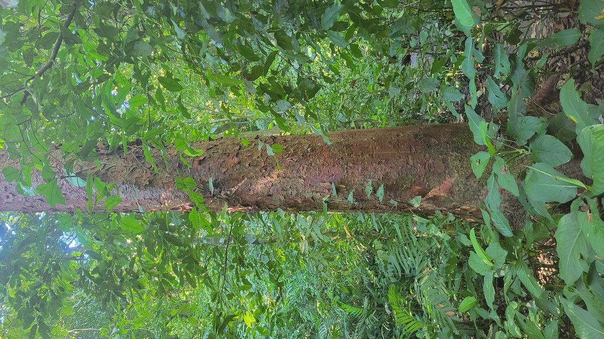
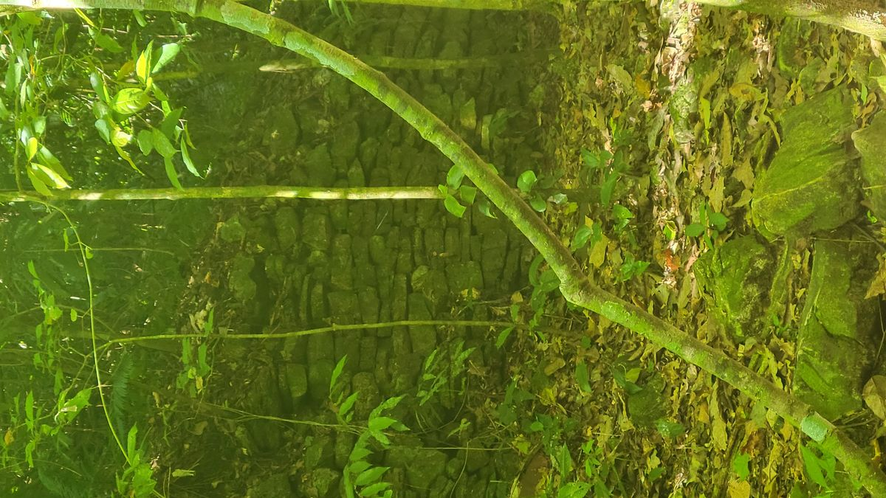
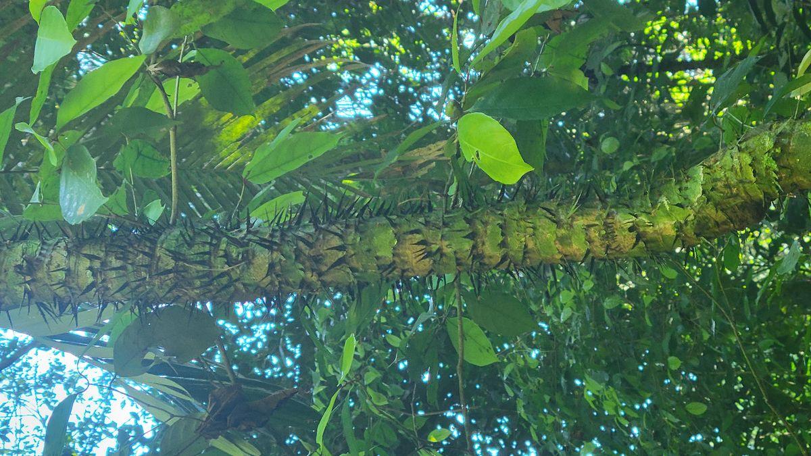
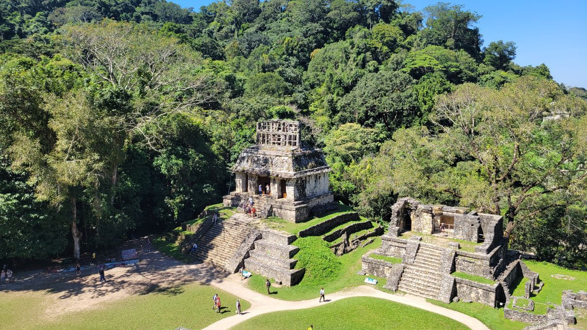
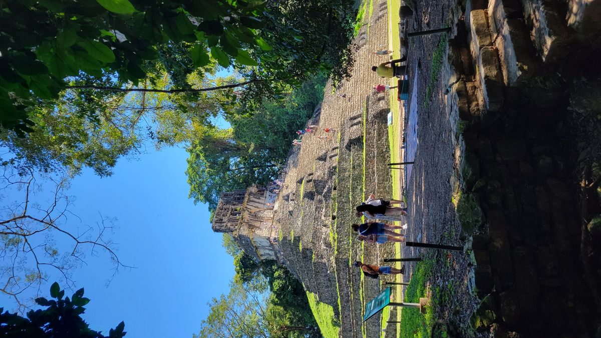
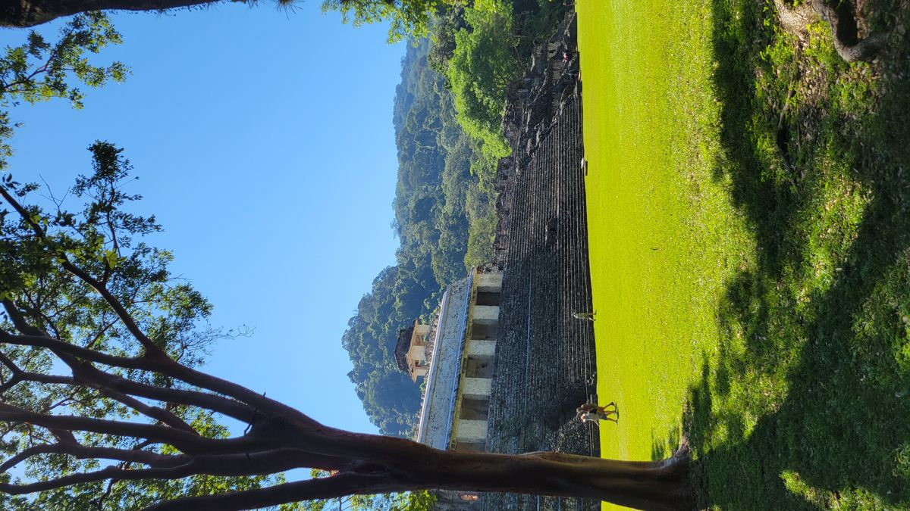

Palenque
I ended up deciding not to ditch Mexico yet. After a night around a firepit, other travelers advised me not to miss Palenque. I was hesitant to take their advice as I had already been to two sets of ancient ruins in Mexico. I’m glad I took their advice.
The ruins in Palenque are much newer than the one I had visited in Oaxaca and Mexico City. Built by the Mayans during their classic period (200-900AD) the architecture is definitly more detailed, showing to how much these civilizations had progressed over the centuries. The ruins sit in the jungle, giving an air of adventure that doesn’t exist at the other site I have been. Experience told me that a guide is always the best way to do these sites as they have little to no interpretive signs, so I found one on Viator and made the reservation.
A lot of backpackers take pride in experiencing these things as cheaply as possible. There’s a collectivo service that runs the main Palenque town, to the archaeological site that will deliver you to the main entrance for just a few pesos. There you can pay an entrance fee of 90 pesos and explore the park to your hearts content. But you miss so much without having someone who is knowledgeable and can provide context. Booking a guide online and arranging for transport isn’t that much more expensive (depending on your budget) and provides so much more value.
When I arrived at the site we picked up the guide from the main entrance and after she introduced herself she immediately began to hustle for an extra tour. Disappointed that the reputable company I had booked through, may not be as reputable as I had imagined.
I’m usually a hard no on that kind of upsell stuff but after a few minutes of convincing I forked over 200 pesos and myself an Italian couple were taken to hole in the fence marked “Privado”
The extra tour was tour of the jungle surrounding the archaeological site and, actually, I’m really glad I did it. I’m pretty sure it was on private land because we had to walk through the fence. A man was sitting there with just a clipboard and the guide just spoke to him “tres” indicating 3 of us were with her. During this extra tour she showed us the various plants and trees that inhabit the area. Mahogany, Balsa and various species of Cedar wee unique to the area. But the coolest thing we saw were multiple sites of unexcavated ruins. The whole Palenque archeological site is huge. Thousand upon thousands of buildings are just sitting in the jungle being consumed by the plants that live there. Only the most important buildings get excavated and restored. Most buildings will probably be devoured by the jungle before anyone has the chance to excavate and restore them.



After about an hour exploring the jungle around Palenque we returned back to the main park and began the tour of the restored temples, altars and buildings. Palenque reached its peak under Pakal the Great who reigned for 68 years. Some buildings that are restores are Pakal’s palace, a tomb to what is believed to be his wife and a few temples that were used to worship various gods. As you can see in the pictures the architectures is much more complex and detailed than the other sites I had been on this journey.




Palenque is another UNESCO world heritage site, and while it gets its fair share of visitors, being 12 hours away from the resort destination of Cancun means other sites (ie Chicen Itza) get more tourists and exposure. This in the the process of changing though. The Mexican government is currently in the final stages of one of its largest projects in history, Tren Maya. Once fully operational (its currently running, just not on any sort of viable schedule) the cancun airport will be linked directly to the front entrance of the Palenque archeological site. While I was there the main museum was under construction and various other service buildings were being added around the park to handle the inevitable increase in tourists that are about to come. So, if you saw anything here you want to see, give it a year or so and take the Train to Palenque.